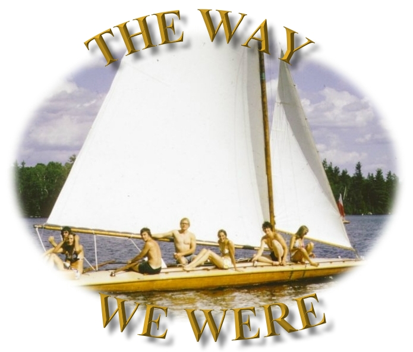
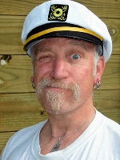
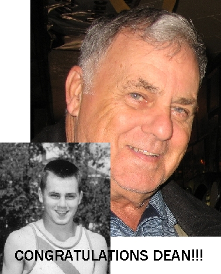

 SAY, HEY, IT'S RUDI AND WILLIE MAYSRUDI WITH METS SUPER-SLUGGER, DAVID WRIGHT RUDI AND JERRY SEINFELD (A GREAT METS FAN) SWAP ONE-LINERSRUDI WITH 69 METS PLAYERS ED KRANEPOOL AND RON SWOBODA RUDI AT BATTING PRACTICERUDI AND THE COMPLETE 2008 BACKUP TEAMTHE COMMANDER AND RUDICC AND MARKCC AND THE "NAKED COWBOY"
SAY, HEY, IT'S RUDI AND WILLIE MAYSRUDI WITH METS SUPER-SLUGGER, DAVID WRIGHT RUDI AND JERRY SEINFELD (A GREAT METS FAN) SWAP ONE-LINERSRUDI WITH 69 METS PLAYERS ED KRANEPOOL AND RON SWOBODA RUDI AT BATTING PRACTICERUDI AND THE COMPLETE 2008 BACKUP TEAMTHE COMMANDER AND RUDICC AND MARKCC AND THE "NAKED COWBOY"
 RUDI MONA AND CHUCKRUDI AND HILLARY CLINTONRUDI AND EX GOVERNOR ELLIOT SPITZER
RUDI MONA AND CHUCKRUDI AND HILLARY CLINTONRUDI AND EX GOVERNOR ELLIOT SPITZER RUDI AND THE SISTERS OF THE PASSIONRUDI AND THE GREAT YOGI BERRARUDI AND BOXING CHAMP, KEN NORTONRUDI AND SMOKIN' JOE FRAZIER ENJOYING A BASS ALERUDI MEETS LARRY HOLMES RUDI POSES IN CLASS WITH TWO OF HIS STUDENTS
RUDI AND THE SISTERS OF THE PASSIONRUDI AND THE GREAT YOGI BERRARUDI AND BOXING CHAMP, KEN NORTONRUDI AND SMOKIN' JOE FRAZIER ENJOYING A BASS ALERUDI MEETS LARRY HOLMES RUDI POSES IN CLASS WITH TWO OF HIS STUDENTS RUDI AND DAUGHTER LISA JANE BREAKING ICE AT THE BOBRUNRUDI AND THE GIRLS OF THE SUMMER OF '06BILLY ALLEN ATTEMPTS TO HIT MOODY POND FROM MOUNT BAKERRUGBY WEEKEND BOLTER CAMPION, LOUIE HALL, JOHN CAMPION SR, GEORGE CAMPION, JIMMY CAMPION AND TIM PERIA JOHNNY RAYMOND AND FRIENDSGOOD FRIENDS AND A CRACKLING CAMPFIRE-BILLY AND RUDIJACK KNIGHT LEARNS A NEW CHORD FROM BILLY ALLEN BILLY ALLEN IN HIS OWN PRIVATE SPACE-1973GREGORY "TANZER" TANZINIBILLY ALLEN AND FRIENDS CELEBRATE HIS 50th ON THE LAKE-2004-SHAKES DISPLAYS HIS SPIDER POWERS AS HAWK HOLDS THE PILLAR STEADY JOHN MORGAN AND PAT FOUNTAIN----STRANGE!1976--SLCHS BAND PLAYING AT 1980 WINTER OLYMPIC GROUND BREAKING CEREMONYDIGNITARIES AT 1980 WINTER OLYMPIC GROUND BREAKING CEREMONYMIRACLE ON ICE--BOB RICHTER'S MOMENT OF GLORY "LITTLE JOE" GLADD (IN GREEN)-----THE WILD ONE!DOUG WARNER AND CAROL COULLIER--ANOTHER WILD ONEDOUG WARNER OUT ON A LIMBPOLICE CHIEF GIL MIRON--WINTER CARNIVAL CROWD CONTROLGEORGE BEDORE--WINTER CARNIVAL SNOW CONTROLCASEY MORGAN OF MORGAN'S 11BRIAN MORGAN WINNING MEDAL AT JR. BOBSLED RACE--1975OUR OLD BUDDY, CHUCK DELANCETT (2/11/1944-7/9/2003), AS HE WOULD LIKE TO BE REMEMBEREDLONNY ROURKE, HUNTER, FISHERMAN AND ONE HELL OF A NICE OLD GUY BILLY ALLEN--MATADORBRIAN BAKER AND GARY "ERNIE" COLLELA AT THE WATERHOLESKIP EMMONS AT THE WATERHOLEJOEY WOODRUFF-ZEN AND THE ART OF MOTORCYCLE MAINTENANCE-"GUMBY" McLAUGHLIN--1974--TOP DOG AND COOLEST OF THE CANINES, WESTPORT.ANOTHER COOL CANINE, DAVE AND JOANNE MACDOWELL'S SUZIE.JOEL MUNN, BOLTER CAMPION, WESTPORT AND STUPAUL "BUMMER" DUPREY, MISSED BY US ALL.WAR CANOE!THE WAR CANOE CREW ON DRY LAND!TIM DOYLE TAKES FIRST PRIZEHERE THEY ARE, VINNIES VAMPS AND COACH "LUCKY" BILL ALLEN!!! BEEF BEVILAQUA, JAN PLUMADORE AND JERRY GILMETT, RUGGERS GO REDSKINS!! JAN PLUMADORE, JOHNNY RAYMOND AND JOHN MORGAN 1980 RUGBY SUPERBOWL, SARANAC LAKE. USA VERSUS CANADA HAWK EDELBERG, BUTCH SAGEMAN AND THE OLD FORESTERJAY SAVAGE- EZ RIDER NICK LOGIE, JEFF BEAMISH AND MIKE BEGLINNICK LOGIE, ORIGINAL MOUNTAINEERFOLK ART WITH BOLTER AND DICKYARTISTIC RENDERING OF SHAKES AND SHANNON MCLAUGHLINRUGBY REUNION 1997RUGBY REUNION 1997SHAKES, RUDI AND "DOLPHIN" MORGAN QUEEN PHYLISS KNOBEL AND KING LOUIE FOBARE WINTER CARNIVAL 1977PETE CAMELO AND SALLY (BRANCH) MULDOWNEY-CARNIVAL 1977TUG DUFFY AND LIZ SCAMEL-CARNIVAL 1977DAVE ROBERTSON AND PATTY HOWARD-CARNIVAL 1977DAVE SCOLLIN AND ROBIN GILBERT-CARNIVAL 1977MIKE KEOUGH AND VICKIE FOUNTAIN-CARNIVAL 1977T.C. NORMAN AND EILEEN BRISTOL-CARNIVAL 1977TODD FOBARE AND BRENDA CRUICKSHANK-CARNIVAL 1977TANZER AND MIZ DEBBIEJIM LAPAN AND WAYNE NEWMAN ENJOY SAILINGTONY LUPINO AND DAVE FAVRODICK PARKMARK'S GRILL AKA VINNIES SOFTBALL TEAM OF THE SEVENTIESAMISH GROUPBRAD SAGEMAN,AKA "TASMANIAN DEVIL"JACK DELAHANT AT THE LAKE PLACID CLUB ORGANLISA Y TAKES A KNIGHT OFFTHE ORIGINAL BACKDOOR AND THE CAPABLE STAFFJOSH CLEMENT, FORMER PROPRIETOR OF "THE DOOR/STUDIO 76" IRREVERENT EDDIE "EGGPLANT" MACDOWELLPOLICE CHIEF GERALD OXFORD, SECOND BASEPOLICE CHIEF GERALD OXFORD---BATTER UP!JUDGE CARL GRIEBSCH, UMPIREJOHN MORGAN AT WORKJIMMY LAFOUNTAINROY SNYDER AND BOB BROWN OF NCCCKELLY MORGAN AND DICKIE DORA (Newman's wedding reception at Will Rogers)CASA DEL SOLCASA DEL SOUL(CASA DE GUSTA)RIVER STREETCASA DE GUSTA 2TIT RATIGAN CURING ON THE PORCH OF CASA DE GUSTA 2NICK KRETIS, BOB CARR AND BOB CARLSON AT CASA DE GUSTABILLY ALLENTHE ALTO SOPRANOSHAS ANYBODY HERE SEEN MY OLD FRIEND ABRAHAM?BOLTER CHECKS HIS FUEL BEFORE CASTING OFF THREE BLATANT VIOLATIONS OF THE OPEN CONTAINER LAW.(AND ONE "POSSIBLE" OFFENDER!) SULLY ON DEW DROP'S FLOATKING JEFF WHISHER AND QUEEN BETTY DORA 1975SHAKES ENJOYS "LADIES NIGHT OUT"JOHN CAMPION WHEN HE HAD HAIRBEA LAFOUNTAIN AND KEN GARWOOD SELLING TREES IN FLHENRY SAVARIE TOSSING A FEWHENRY'S BACKHANDTOM RATIGAN, MOUNTAIN MANTHE FAMOUS HI-PEAKS ROOFING SOFTBALL TEAM - 1975GIL MIRON CONTEMPLATES A TASTY, COLD BEVERAGETERRY BAILEY, NICK LOGIE, JERRY GILMETTE AND JERRY FLETCHERBLACK FLY LEAGUE AND PLAYOFF CHAMPS OF 1977-DUFFY'S CEDAR POST -
SARANAC LAKE MOUNTAINEERS RUGBY TEAM OF THE 70's SARANAC LAKE MOUNTAINEERS RUGBY TEAM OF THE 70's 2 RUGBY STREAKERS (CENSORED VERSION)THE 1968 REDSKINS NORTHERN LEAGUE BASEBALL CHAMPSGARWOOD, MORGAN AND SNYDER INVADE FLORIDAKING WAYNE'S WEDDINGTHIS IS A BEAUTIFUL SHOT OF THE 1981 BERKLEY FIRE TAKEN BY JAMES "RUDI" SNYDER
RUDI AND DAUGHTER LISA JANE BREAKING ICE AT THE BOBRUNRUDI AND THE GIRLS OF THE SUMMER OF '06BILLY ALLEN ATTEMPTS TO HIT MOODY POND FROM MOUNT BAKERRUGBY WEEKEND BOLTER CAMPION, LOUIE HALL, JOHN CAMPION SR, GEORGE CAMPION, JIMMY CAMPION AND TIM PERIA JOHNNY RAYMOND AND FRIENDSGOOD FRIENDS AND A CRACKLING CAMPFIRE-BILLY AND RUDIJACK KNIGHT LEARNS A NEW CHORD FROM BILLY ALLEN BILLY ALLEN IN HIS OWN PRIVATE SPACE-1973GREGORY "TANZER" TANZINIBILLY ALLEN AND FRIENDS CELEBRATE HIS 50th ON THE LAKE-2004-SHAKES DISPLAYS HIS SPIDER POWERS AS HAWK HOLDS THE PILLAR STEADY JOHN MORGAN AND PAT FOUNTAIN----STRANGE!1976--SLCHS BAND PLAYING AT 1980 WINTER OLYMPIC GROUND BREAKING CEREMONYDIGNITARIES AT 1980 WINTER OLYMPIC GROUND BREAKING CEREMONYMIRACLE ON ICE--BOB RICHTER'S MOMENT OF GLORY "LITTLE JOE" GLADD (IN GREEN)-----THE WILD ONE!DOUG WARNER AND CAROL COULLIER--ANOTHER WILD ONEDOUG WARNER OUT ON A LIMBPOLICE CHIEF GIL MIRON--WINTER CARNIVAL CROWD CONTROLGEORGE BEDORE--WINTER CARNIVAL SNOW CONTROLCASEY MORGAN OF MORGAN'S 11BRIAN MORGAN WINNING MEDAL AT JR. BOBSLED RACE--1975OUR OLD BUDDY, CHUCK DELANCETT (2/11/1944-7/9/2003), AS HE WOULD LIKE TO BE REMEMBEREDLONNY ROURKE, HUNTER, FISHERMAN AND ONE HELL OF A NICE OLD GUY BILLY ALLEN--MATADORBRIAN BAKER AND GARY "ERNIE" COLLELA AT THE WATERHOLESKIP EMMONS AT THE WATERHOLEJOEY WOODRUFF-ZEN AND THE ART OF MOTORCYCLE MAINTENANCE-"GUMBY" McLAUGHLIN--1974--TOP DOG AND COOLEST OF THE CANINES, WESTPORT.ANOTHER COOL CANINE, DAVE AND JOANNE MACDOWELL'S SUZIE.JOEL MUNN, BOLTER CAMPION, WESTPORT AND STUPAUL "BUMMER" DUPREY, MISSED BY US ALL.WAR CANOE!THE WAR CANOE CREW ON DRY LAND!TIM DOYLE TAKES FIRST PRIZEHERE THEY ARE, VINNIES VAMPS AND COACH "LUCKY" BILL ALLEN!!! BEEF BEVILAQUA, JAN PLUMADORE AND JERRY GILMETT, RUGGERS GO REDSKINS!! JAN PLUMADORE, JOHNNY RAYMOND AND JOHN MORGAN 1980 RUGBY SUPERBOWL, SARANAC LAKE. USA VERSUS CANADA HAWK EDELBERG, BUTCH SAGEMAN AND THE OLD FORESTERJAY SAVAGE- EZ RIDER NICK LOGIE, JEFF BEAMISH AND MIKE BEGLINNICK LOGIE, ORIGINAL MOUNTAINEERFOLK ART WITH BOLTER AND DICKYARTISTIC RENDERING OF SHAKES AND SHANNON MCLAUGHLINRUGBY REUNION 1997RUGBY REUNION 1997SHAKES, RUDI AND "DOLPHIN" MORGAN QUEEN PHYLISS KNOBEL AND KING LOUIE FOBARE WINTER CARNIVAL 1977PETE CAMELO AND SALLY (BRANCH) MULDOWNEY-CARNIVAL 1977TUG DUFFY AND LIZ SCAMEL-CARNIVAL 1977DAVE ROBERTSON AND PATTY HOWARD-CARNIVAL 1977DAVE SCOLLIN AND ROBIN GILBERT-CARNIVAL 1977MIKE KEOUGH AND VICKIE FOUNTAIN-CARNIVAL 1977T.C. NORMAN AND EILEEN BRISTOL-CARNIVAL 1977TODD FOBARE AND BRENDA CRUICKSHANK-CARNIVAL 1977TANZER AND MIZ DEBBIEJIM LAPAN AND WAYNE NEWMAN ENJOY SAILINGTONY LUPINO AND DAVE FAVRODICK PARKMARK'S GRILL AKA VINNIES SOFTBALL TEAM OF THE SEVENTIESAMISH GROUPBRAD SAGEMAN,AKA "TASMANIAN DEVIL"JACK DELAHANT AT THE LAKE PLACID CLUB ORGANLISA Y TAKES A KNIGHT OFFTHE ORIGINAL BACKDOOR AND THE CAPABLE STAFFJOSH CLEMENT, FORMER PROPRIETOR OF "THE DOOR/STUDIO 76" IRREVERENT EDDIE "EGGPLANT" MACDOWELLPOLICE CHIEF GERALD OXFORD, SECOND BASEPOLICE CHIEF GERALD OXFORD---BATTER UP!JUDGE CARL GRIEBSCH, UMPIREJOHN MORGAN AT WORKJIMMY LAFOUNTAINROY SNYDER AND BOB BROWN OF NCCCKELLY MORGAN AND DICKIE DORA (Newman's wedding reception at Will Rogers)CASA DEL SOLCASA DEL SOUL(CASA DE GUSTA)RIVER STREETCASA DE GUSTA 2TIT RATIGAN CURING ON THE PORCH OF CASA DE GUSTA 2NICK KRETIS, BOB CARR AND BOB CARLSON AT CASA DE GUSTABILLY ALLENTHE ALTO SOPRANOSHAS ANYBODY HERE SEEN MY OLD FRIEND ABRAHAM?BOLTER CHECKS HIS FUEL BEFORE CASTING OFF THREE BLATANT VIOLATIONS OF THE OPEN CONTAINER LAW.(AND ONE "POSSIBLE" OFFENDER!) SULLY ON DEW DROP'S FLOATKING JEFF WHISHER AND QUEEN BETTY DORA 1975SHAKES ENJOYS "LADIES NIGHT OUT"JOHN CAMPION WHEN HE HAD HAIRBEA LAFOUNTAIN AND KEN GARWOOD SELLING TREES IN FLHENRY SAVARIE TOSSING A FEWHENRY'S BACKHANDTOM RATIGAN, MOUNTAIN MANTHE FAMOUS HI-PEAKS ROOFING SOFTBALL TEAM - 1975GIL MIRON CONTEMPLATES A TASTY, COLD BEVERAGETERRY BAILEY, NICK LOGIE, JERRY GILMETTE AND JERRY FLETCHERBLACK FLY LEAGUE AND PLAYOFF CHAMPS OF 1977-DUFFY'S CEDAR POST -
SARANAC LAKE MOUNTAINEERS RUGBY TEAM OF THE 70's SARANAC LAKE MOUNTAINEERS RUGBY TEAM OF THE 70's 2 RUGBY STREAKERS (CENSORED VERSION)THE 1968 REDSKINS NORTHERN LEAGUE BASEBALL CHAMPSGARWOOD, MORGAN AND SNYDER INVADE FLORIDAKING WAYNE'S WEDDINGTHIS IS A BEAUTIFUL SHOT OF THE 1981 BERKLEY FIRE TAKEN BY JAMES "RUDI" SNYDER  THE SHAMROCK INN IN 1975. NOW REOPENED AND STILL IN NANCY'S FAMILY.HERE'S THE DEW DROP INN'S FAMOUS SIGN WHEN IT LIT UP BROADWAYHERE'S BILLY WITH THE NIKON HE USED FOR THESE SHOTSTHE WATERHOLE #3 DECORATED FOR CHRISTMAS 1986BILL ALLEN SR. AND RALPH MORROWJOE CAVELLO SR.ELAINE AND KRISTY KNOBLEBRENT AND SAM RUSHLAWERNIE THURBER AT THE WATERHOLE #3-1985CHUCK SIMPSON AND KATHY MUNN-1985 "ERNIE" COLLELA AND A COUPLE OF FRIENDSTHE LEGEND LIVES ONBRENT "STUNTMAN" RUSHLAW WITH WATERHOLE #3 BOBSLEDBREAKFAST WITH TANZERGENE AND LITTLE JOE PREPARE TO CLOSE SHOPA FINAL TRIBUTE FROM AN INEPT CARTOONIST (BUT LOYAL PATRON OF LITTLE JOE'S)A FAREWELL POEMLOOKING DOWN BROADWAY FROM THE HOTEL SARANAC ROOFIVAN, JIMMY AND JB BICKFORD PERFORM "DUELING BANJOS" A CAPPELLOBUMMER DUPREY AND BIG TROUTTHE ALLEN BOYS, BILL AND BILLYBILL ALLEN AND VINNIE PELLETEIRIBILL SR. AND BUMMER DUPREY WITH THE BUCKTHE ALLEN BOYS BAG A FOX BILL ALLEN SR. TAKES AIM AT A BIG BUCKHE GOT ITTOM DOTY, BILL ALLEN SR. AND GANG AT CAMPCRAIG DICKIE AND HIS CATCHBILL ALLEN SR., TOM DOTY AND BEARSTEVE "RABBIT" OBECK, ALAN "WAMMY WAMSGANZ, DOUG "SPLATTER" WARNER AND RICK KNOBEL EARN A BUCKVINNY PELLETEIRI GETS ALL HE CAN BEARBILLY AND HIS DAD AFTER ANOTHER SUCCESSFUL HUNTBILL ALLEN SR AND PIKEBRUCE ARNOLD AND HIS BUCKTANZER AND EGGPLANT PREPARING FOR THE HUNTTHE WATERHOLE #3 SHARKS 1988PEANUT BAKER UP THE CREEK WITH A PADDLESHIRLEY D OF THE CASABLANCA--1983GEORGE CAMPION AND JERRY CAVELLO IN 1986CAROL BAKER, ALAN WAMSGANZ AND KATHY MUNN IN 1984ELAINE KNOBLE AND WINNIE PELLETEIRI IN 1986SARANAC LAKE'S MOST COLORFUL MAYOR, FRANK RATIGANVINNY PELLETEIRI AT THE STARTLISA AND DANNY LEONIDASTHE THREE CABALLEROS, DANNY LEONIDAS, ERIC NEWMAN AND JUSTIN GARWOODMRS MC, COLORFUL AS THE SPRING FLOWERS ON THE WATERHOLE PORCH THE UNFORGETABLE JACK "MOOGA" GILLESPIE AT HIS BEST!JACK DOING HIS FAMOUS "MOOGA" DANCEHERE'S ANOTHER COLORFUL GUY, TONY SCHENCK!ANOTHER TRULY UNFORGETABLE GUY, HOOT SULLIVAN!A PAIR OF BOTH COLORFUL AND UNFORGETABLE GUYS, PEANUT BAKER AND PHIL LEONIDIS!BRAD "EGGPLANT" MACDOWELL, FIRE KING 1991KYLE MUNN OF SNUFFY'S PUB FAME - CAPTAIN PINSTRIPESERNIE THURBER AND BUDDYBARB AND BRUCE DARRING AT WATERHOLE WINTER CARNIVAL ICE BAR 1989THE PHELAN BOYS AND CRONIESCAN YOU IDENTIFY THIS LADY?KENNY NORTON AT THE WATERHOLEPETE McCONVILLE-WATERHOLE NATIVE AMERICAN-WINTER CARNIVAL 1989KENNY NORTON, RUZANNE AND EGGPLANT-CHRISTMAS 1983 AT THE WATERHOLEJIMMY CAMPION, JOEY CAVALLO AND FRIENDTOMMY CLEMENT, RAY ROCK, GARY COLLELLA AND RANDY LENNONGUPPY AND PUPPYTONY PIRO, KELLY MORGAN, HECTOR CRUIKSHANK AND HENRY NEVERETTCOLLEEN MORGAN AND BEVERAGECHERYL PEACOCK ON THE FARM"ADIRONDACK" FRED SULLIVAN, JAN AND FIHENRY, JODIE AND BRUCESCHEEFER BOYS, ADIRONDACK BUILDERSTHE PORCH GIRLS--PEGGY DORA, LISA LEONIDAS AND KELLY MORGANBUMMER DUPREYHOOT SULLIVANCHAMP BRANCHBOLTER CAMPIONSTU AND EDDIEJACK MURPHY, STEVE, RAY MURPHY AND JOE KEAGANBEAST, EGGPLANT AND MIKE SHERIDAN THE BEASTPHIL LEONIDAS, DICKIE DORA, ?, ?---BARFLY OPENTUG DUFFY, JIMMY WEBSTER, GREG ZEH AND JEFF REYELL---BARFLY OPENDR.Y, HARRY TUCKER, JOHN MORGAN AND KEN HUNT---BARFLY OPENTHE WATERHOLE SOFTBALL TEAMGROCER, CHARLIE GREENCHUCK SIMPSON'S INFAMOUS CASABLANCA BARGARY "PEANUT" BAKERBACKDOOR BARFLIES, JOHN PICKREIGN, SID COLE, DAVY MUNN AND PAT DOYLECHUCK SIMPSON, RUDI SNYDER, PEANUT BAKER AND RANDY LENNON,--BARFLY OPEN--HENRY NEVERETT---BARFLY OPENPAISAN, CHRISTINA AND BRETTTHE INFAMOUS ST PIUS X 1962 TRACK TEAMLARRY PICKREIGN, PAUL "WACKY" PATNODE AND GREG PHILLIPS AT THE WATERHOLEPETRINA AND ROCKY PIRO AT THE WATERHOLETHE ALPINE GANGBOB LIDDY GETS HIS MOOSESHAKES GETS TOMMY DAVIS' AUTOGRAPH SHAKES AND FREDDY CANNONSHAKES GETS CARL ERSKINE'S AUTOGRAPH SHAKES, RUDI AND "DOLPHIN" MORGAN SHANNON AND GUMBY CELEBRATE ST PATTY'S DAY, 12 YEARS APART AUGUST 1968, EGGPLANT GETS READY TO VISIT VIET NAM 1973--KEN "BUNDY" GARWOOD, RUDI SNYDER AND HENRY SAVARIE BILL MCLAUGHLIN AT TRUDEAU SAN 19451959 MOOSE CLUB LITTLE LEAGUE1978 BLACK FLY CHAMPSBRENT RUSHLAW (CF)-PEANUT BAKER (2B)CRAIG DUSO (RF)FORREST CARR (LF)JOEL MUNN (CATCHER)-JOHN (DOLPHIN) MORGAN (RCF)TOMMY (T.C.) CLEMENT (1B)-JOEL MUNN, TERRY STRACKSHAKES McLAUGHLIN (PITCHER)WEDDING 1976-BILL YETMAN, MARY E. WESTON, SHAKES, MINDY CROFFORD, GEORGE CAMPION AND SHANNON McLAUGHLINTOMMY SCHEEFER, SHAKES AND LORRAINE McLAUGHLIN1962 WINTER CARNIVAL SLED DERBY WINNERSSHAKES WITH HIS FIRST SET OF WHEELSWHY SHANNON McLAUGHLIN DOESN'T DO RED LOBSTERTHE BRAKEPERSON IS SUPPOSED TO PUSH!THIS TEAM IS HARD TO BEAT, 1980 MIXED TOURNAMENT CHAMPSPACK 9, DEN 3 1960BILL OPP AND DUNCANDUNCAN AT WORK
THE SHAMROCK INN IN 1975. NOW REOPENED AND STILL IN NANCY'S FAMILY.HERE'S THE DEW DROP INN'S FAMOUS SIGN WHEN IT LIT UP BROADWAYHERE'S BILLY WITH THE NIKON HE USED FOR THESE SHOTSTHE WATERHOLE #3 DECORATED FOR CHRISTMAS 1986BILL ALLEN SR. AND RALPH MORROWJOE CAVELLO SR.ELAINE AND KRISTY KNOBLEBRENT AND SAM RUSHLAWERNIE THURBER AT THE WATERHOLE #3-1985CHUCK SIMPSON AND KATHY MUNN-1985 "ERNIE" COLLELA AND A COUPLE OF FRIENDSTHE LEGEND LIVES ONBRENT "STUNTMAN" RUSHLAW WITH WATERHOLE #3 BOBSLEDBREAKFAST WITH TANZERGENE AND LITTLE JOE PREPARE TO CLOSE SHOPA FINAL TRIBUTE FROM AN INEPT CARTOONIST (BUT LOYAL PATRON OF LITTLE JOE'S)A FAREWELL POEMLOOKING DOWN BROADWAY FROM THE HOTEL SARANAC ROOFIVAN, JIMMY AND JB BICKFORD PERFORM "DUELING BANJOS" A CAPPELLOBUMMER DUPREY AND BIG TROUTTHE ALLEN BOYS, BILL AND BILLYBILL ALLEN AND VINNIE PELLETEIRIBILL SR. AND BUMMER DUPREY WITH THE BUCKTHE ALLEN BOYS BAG A FOX BILL ALLEN SR. TAKES AIM AT A BIG BUCKHE GOT ITTOM DOTY, BILL ALLEN SR. AND GANG AT CAMPCRAIG DICKIE AND HIS CATCHBILL ALLEN SR., TOM DOTY AND BEARSTEVE "RABBIT" OBECK, ALAN "WAMMY WAMSGANZ, DOUG "SPLATTER" WARNER AND RICK KNOBEL EARN A BUCKVINNY PELLETEIRI GETS ALL HE CAN BEARBILLY AND HIS DAD AFTER ANOTHER SUCCESSFUL HUNTBILL ALLEN SR AND PIKEBRUCE ARNOLD AND HIS BUCKTANZER AND EGGPLANT PREPARING FOR THE HUNTTHE WATERHOLE #3 SHARKS 1988PEANUT BAKER UP THE CREEK WITH A PADDLESHIRLEY D OF THE CASABLANCA--1983GEORGE CAMPION AND JERRY CAVELLO IN 1986CAROL BAKER, ALAN WAMSGANZ AND KATHY MUNN IN 1984ELAINE KNOBLE AND WINNIE PELLETEIRI IN 1986SARANAC LAKE'S MOST COLORFUL MAYOR, FRANK RATIGANVINNY PELLETEIRI AT THE STARTLISA AND DANNY LEONIDASTHE THREE CABALLEROS, DANNY LEONIDAS, ERIC NEWMAN AND JUSTIN GARWOODMRS MC, COLORFUL AS THE SPRING FLOWERS ON THE WATERHOLE PORCH THE UNFORGETABLE JACK "MOOGA" GILLESPIE AT HIS BEST!JACK DOING HIS FAMOUS "MOOGA" DANCEHERE'S ANOTHER COLORFUL GUY, TONY SCHENCK!ANOTHER TRULY UNFORGETABLE GUY, HOOT SULLIVAN!A PAIR OF BOTH COLORFUL AND UNFORGETABLE GUYS, PEANUT BAKER AND PHIL LEONIDIS!BRAD "EGGPLANT" MACDOWELL, FIRE KING 1991KYLE MUNN OF SNUFFY'S PUB FAME - CAPTAIN PINSTRIPESERNIE THURBER AND BUDDYBARB AND BRUCE DARRING AT WATERHOLE WINTER CARNIVAL ICE BAR 1989THE PHELAN BOYS AND CRONIESCAN YOU IDENTIFY THIS LADY?KENNY NORTON AT THE WATERHOLEPETE McCONVILLE-WATERHOLE NATIVE AMERICAN-WINTER CARNIVAL 1989KENNY NORTON, RUZANNE AND EGGPLANT-CHRISTMAS 1983 AT THE WATERHOLEJIMMY CAMPION, JOEY CAVALLO AND FRIENDTOMMY CLEMENT, RAY ROCK, GARY COLLELLA AND RANDY LENNONGUPPY AND PUPPYTONY PIRO, KELLY MORGAN, HECTOR CRUIKSHANK AND HENRY NEVERETTCOLLEEN MORGAN AND BEVERAGECHERYL PEACOCK ON THE FARM"ADIRONDACK" FRED SULLIVAN, JAN AND FIHENRY, JODIE AND BRUCESCHEEFER BOYS, ADIRONDACK BUILDERSTHE PORCH GIRLS--PEGGY DORA, LISA LEONIDAS AND KELLY MORGANBUMMER DUPREYHOOT SULLIVANCHAMP BRANCHBOLTER CAMPIONSTU AND EDDIEJACK MURPHY, STEVE, RAY MURPHY AND JOE KEAGANBEAST, EGGPLANT AND MIKE SHERIDAN THE BEASTPHIL LEONIDAS, DICKIE DORA, ?, ?---BARFLY OPENTUG DUFFY, JIMMY WEBSTER, GREG ZEH AND JEFF REYELL---BARFLY OPENDR.Y, HARRY TUCKER, JOHN MORGAN AND KEN HUNT---BARFLY OPENTHE WATERHOLE SOFTBALL TEAMGROCER, CHARLIE GREENCHUCK SIMPSON'S INFAMOUS CASABLANCA BARGARY "PEANUT" BAKERBACKDOOR BARFLIES, JOHN PICKREIGN, SID COLE, DAVY MUNN AND PAT DOYLECHUCK SIMPSON, RUDI SNYDER, PEANUT BAKER AND RANDY LENNON,--BARFLY OPEN--HENRY NEVERETT---BARFLY OPENPAISAN, CHRISTINA AND BRETTTHE INFAMOUS ST PIUS X 1962 TRACK TEAMLARRY PICKREIGN, PAUL "WACKY" PATNODE AND GREG PHILLIPS AT THE WATERHOLEPETRINA AND ROCKY PIRO AT THE WATERHOLETHE ALPINE GANGBOB LIDDY GETS HIS MOOSESHAKES GETS TOMMY DAVIS' AUTOGRAPH SHAKES AND FREDDY CANNONSHAKES GETS CARL ERSKINE'S AUTOGRAPH SHAKES, RUDI AND "DOLPHIN" MORGAN SHANNON AND GUMBY CELEBRATE ST PATTY'S DAY, 12 YEARS APART AUGUST 1968, EGGPLANT GETS READY TO VISIT VIET NAM 1973--KEN "BUNDY" GARWOOD, RUDI SNYDER AND HENRY SAVARIE BILL MCLAUGHLIN AT TRUDEAU SAN 19451959 MOOSE CLUB LITTLE LEAGUE1978 BLACK FLY CHAMPSBRENT RUSHLAW (CF)-PEANUT BAKER (2B)CRAIG DUSO (RF)FORREST CARR (LF)JOEL MUNN (CATCHER)-JOHN (DOLPHIN) MORGAN (RCF)TOMMY (T.C.) CLEMENT (1B)-JOEL MUNN, TERRY STRACKSHAKES McLAUGHLIN (PITCHER)WEDDING 1976-BILL YETMAN, MARY E. WESTON, SHAKES, MINDY CROFFORD, GEORGE CAMPION AND SHANNON McLAUGHLINTOMMY SCHEEFER, SHAKES AND LORRAINE McLAUGHLIN1962 WINTER CARNIVAL SLED DERBY WINNERSSHAKES WITH HIS FIRST SET OF WHEELSWHY SHANNON McLAUGHLIN DOESN'T DO RED LOBSTERTHE BRAKEPERSON IS SUPPOSED TO PUSH!THIS TEAM IS HARD TO BEAT, 1980 MIXED TOURNAMENT CHAMPSPACK 9, DEN 3 1960BILL OPP AND DUNCANDUNCAN AT WORK JUDGE CARL GREIBSCH (thanx to Bill Grogan)
FACING TOWN HALLBERKLEY SQUAREUP IN SMOKE
INFORMATION PLEASE
NEDDY, KENNY AND KRIS
JOSH CLEMENT, ELAINE KNOBLE, VICKIE ARNOLD AND CECELIA SNYDERSAM AND THE MERMAIDS2008 WINTER CARNIVAL QUEEN, JANET SIMKINS AND HER HUSBAND, MARK.John Pedroni & John MorganJohn Pedroni, Mike Kohn 2002 Bobsledding Bronze Medalist & John Morgan
John Pedroni and 1986 Daytona 500 winner Geoff Bodine
John Pedroni, Julie Childress Olympic Bobsledder & John Morgan
John Pedroni, Julie Childress, Stephanie Pedroni & John Morgan
JUDGE CARL GREIBSCH (thanx to Bill Grogan)
FACING TOWN HALLBERKLEY SQUAREUP IN SMOKE
INFORMATION PLEASE
NEDDY, KENNY AND KRIS
JOSH CLEMENT, ELAINE KNOBLE, VICKIE ARNOLD AND CECELIA SNYDERSAM AND THE MERMAIDS2008 WINTER CARNIVAL QUEEN, JANET SIMKINS AND HER HUSBAND, MARK.John Pedroni & John MorganJohn Pedroni, Mike Kohn 2002 Bobsledding Bronze Medalist & John Morgan
John Pedroni and 1986 Daytona 500 winner Geoff Bodine
John Pedroni, Julie Childress Olympic Bobsledder & John Morgan
John Pedroni, Julie Childress, Stephanie Pedroni & John Morgan
19541955RARE NORTH CAROLINA SNOWMANFRIENDLY PEANUT FARMER AND HIS WIFE1953 PROM BANDTHE BIRTHDAY PARTYPRESCOTT PARK BEACH GANGSHIRLEYMIKE KUNATH AND CATRIONA Le MAY DOAN--STILL THE FASTEST WOMAN ON ICE!NICHOLE AND KELLY--KELLY'S BIRTHDAY-2005WALLY COLE AND KAREN KUNATHBEFORE THE COMPUTER THERE WAS----A GREAT TIME SAVERJOHN PEDRONI AND JIMMY MORGAN-1957ELWOOD OBER'S CAMP IN 1939CHER MEETS ELVISIAN O'BRIEN AND "'TWAS THE NIGHT AFTER CHRISTMAS" AT THE WATERHOLE-2006KELLY'S KAMPERS--KINGSTON,ONTARIO TOURNAMENT 1976KELLY'S KAMPERS--KINGSTON,ONTARIO TOURNAMENT 1976Joel at Breckenridge, CO, waiting to instruct the Snow Bunnies.Nancy Griebsh, 1968 in Belgium, where she was a Foreign Exchange StudentBRENT "STUNT MAN" RUSHLAWDICK DORAJAY SAVAGEJIM "RUDI" SNYDER, KEN HUNT AND WAYNE NEWMANJOHN MORGAN"STICK" LAPANTOM RATIGANWAYNE NEWMANBRENT RUSHLAW TERRY HENNESSY"SHAKES" McLAUGHLINMIKE CAMPION"SLICK" DAMBRISIJOEL MUNNDICK DORA, LYNN NEWMAN AND KEN GARWOOD "KING" WAYNE NEWMANSID COLENICK KRETIS, DICK DORA AND JOHN CAMPION JOHN MORGANTOM CROWLEY, JOHN CAMPION AND BOB CARLSONTANZERJOEL MUNN AND HENRY SAVARIE"TIT" RATIGAN, WAYNE NEWMAN AND REDKING WAYNEBETSY SAGEMANSHANNON McLAUGHLINKEN HUNT'S BOATJULY FOURTH 1974CARL SORENSONTHE NEWMANSCAPTAIN SHAKESMARY WESTONB.J. DICKIEBRUCE STILESMARGARET LINDTOM SCHEEFERBILL SCHEEFERTERRY HENNESSYclass of 1957 King Ken lawless Queen Gail(Rogers)Rice1949-third grade class of River Street School crowning of may Queen-8th grade,1951May QueenFather Doe,Msg. Kitts with Champ Branch,Altar Boycrowning of Our Lady, old St. Bernards Catholic Church,circa 1950Our Lady statueDaisy Mae Drag 1 Daisy Mae Drag 2Daisy Mae Drag 3Daisy Mae Drag 4Daisy Mae Drag 5Clate Woodruff And The Rythym RascalsSLHS BAND 1956MEMBERS OF SLHS GLEE CLUB 1956Red and White picnic at Dave Merkle's campCHARLIE HOFFER1951 altar boy's hike-Bob and Art Douquette, Red LaFountain, Charlie Hoffer 1946 June Festival-Rich Emperor, Sandra Darrah flower bearers Lou George's Day Camp Ruth White 1956 Lew Gurley, Rich Emperor, Bill Leroy-1957Pete Loeb, Fred Fitzgerald, Ron VanYserloo, Bill Leroy, Bill White, Rich emperor, Bernie Kentile Riverside park 1957 Rich emperor, Barb Latour, Sue Richter, Patti Jo Keough, Joan KinvilleLake Flower Beach 1958Tom Lockwood, Jean Hale, Rich EmperorRich Emperor, Bill King, lots of fish Father Ward, Dick Emperor, Aretha Bob Pierce, Rich Emperorwalkin' on water at the State Bridge boat launch site 1975Duck Hole lean-to 1974 Grade 3 or 4,River Street School circa 1949JACK PEIGHTALBILL GALLAGHERBERT DORSCHLOU GEORGERUBY BAKER WITH ROSE (PEDRONI) HOLLISTHE SARANAC LAKE GOOD OL' BOYS, ROGER, BUNK, GREG AND WACKY AT A RECENT GATHERING AT THE WATERHOLE. BUNK AND DERMOT AT MORGAN'S 11 TATE AND CODY MACDOWELL STILL LOVE THE MOUNTAINS (JACKSON HOLE, WY)THE REDSKINS OF 1958- from Don Boula SOME 1959 GRADUATES- from Don Boula A DEDICATED REDSKIN-FAKER LAFOUNTAIN-DEW DROP CARRIES FLAG AT VETERAN'S DAY CEREMONYCHUCK AND THE BEAST--MISSED BY US ALLBUNK AND EGGPLANTROCKY PIRO, "WOLFMAN JACK" AND BUNKTHE LATE JOHN "BARFLY" BUCKLEY, BUNK AND ROCKY PIROTHE LATE JOHN "BARFLY" BUCKLEY-WINTER CARNIVAL 1980BUNK AND THE LATE JIM "POPS" COVENTRY THE LATE RICK AND CATHY LAPAN AND SON VARDEN-1978-HOMER AKWIMPY/BUNKTHE WATERHOLE FIGHTS THE LAW--1975WATERHOLE HOSTESS, BRANDYA WATERHOLE REGULAREDNA'S VALENTINE CAKEAN EVENING AT THE PURPLE MOOSE WITH JON AND JOHNWATERHOLE BACK BARBILL MURRAY-DICKIES RESTAURANT-'50sJIMMY KNIGHT'S TREASURESROGER RICHARDS IS STILL CRUISIN'GARY REOME, JOHN MORGAN AND TERRY AUBINJohn Pedroni, Sandy (Rivers) Feinburg, Tom Feinburg--March '02THE BIRTHDAY PARTYJIMMY CORSO AND RACING PARTNERCLASS OF'61 PARTYMARY, KATHY, JOHN, KAREN, BRIAN AND DICK(JAN AND RED PLUMADORE IN BACKGROUND)BILLY, JOHN, EGGPLANT AND BRIANANOTHER SHOT OF THE GANGTHE WATERHOLE GANG IN THE 70'S--MIKE, RUDI, EGGPLANT, GARY AND THE BEASTCAPTAIN EGGPLANT AND DR.DIRT IN NEWPORTTHE CAPTAIN AND MIZ DEBBIETHE BEASTEGGPLANTTHE EGGPLANT TWINSWHO ARE THESE PUNKS BLOCKING BERNIE'S DOORWAY? EGGPLANT NAKED ST.BERNARDS CLASS OF 1957--EARLY ADIRONDACK GUIDES--MY GREAT GRANDFATHER, JOHN Q FOSTER (1) AND MILO MOODY (2)-1889-AUNT PEG'S GIANT PUFFBALLBUNK AND BOB PLAY IT COOLBUNK ENJOYS A COLD BEVERAGEBUNK AND ROCKY PIRO AS HIPPIESJOHN "BARFLY" BUCKLEY,ROCKY PIRO,RICHARD BARTON AND "BUNK" GRIFFIN AT ROUND LAKEBUNK, BARFLY, BILLY, JIMMY CORSO, MIKE BUCKLEY AND OUR FAVORITE BEVERAGEKEVIN ARRIVING AT BAGHDAD INTERNATIONAL AIRPORT (HE FLEW FIRST CLASS!!)KEVIN COLLECTS HIS CARRY-ON LUGGAGEKEVIN IN FRONT OF HIS CABANAKEVIN'S CABANA IS NOW AIR CONDITIONED, COMPLIMENTS OF THE WELCOMING COMMITTEESUNSET IN BAGHDAD